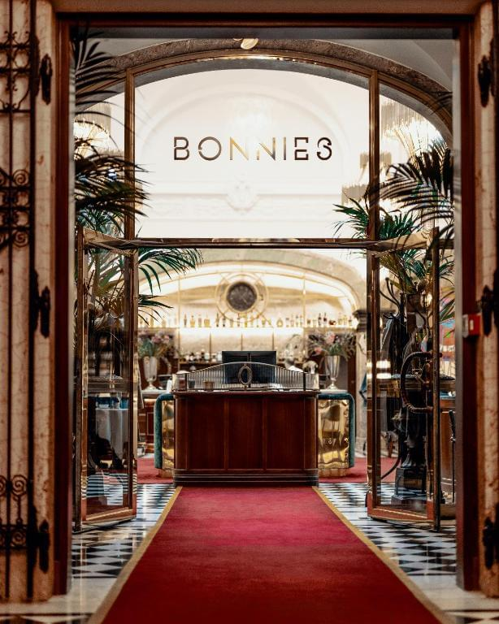
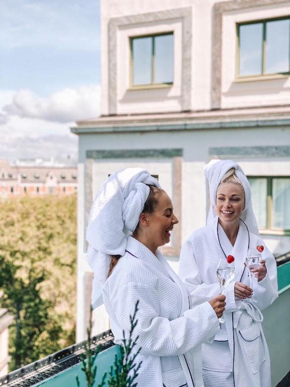
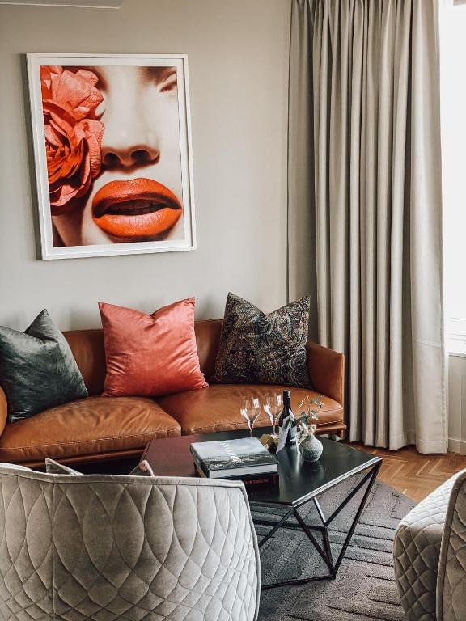

Våra spel är avsedda för en VUXEN publik över 18 år. Klicka på Godkänd för bekräfta din ålder.
Bank Hotel
Bank Hotel, en del av Small Luxury Hotels-kedjan, är ett exceptionellt hotell beläget i centrala Stockholm, i hjärtat av den historiska staden. Detta eleganta hotell förkroppsligar lyx, elegans och rik historia, och ger gästerna en oförglömlig upplevelse och förstklassig service.
Bank Hotel, en del av Small Luxury Hotels-kedjan, är ett hotell som kombinerar lyx med tradition för att skapa en unik atmosfär för gäster som värdesätter utsökt service och komfort.
Om oss
Hotellet ligger i en byggnad som tidigare var en bankinstitution, och detta historiska arv finns bevarat i varje detalj av interiören. Hotellets arkitektur är inspirerande och dess inredning kombinerar klassiska element med modern stil. Gästerna möts omedelbart av en atmosfär av sofistikerad och lyx, vilket gör Bank Hotel till en plats där du kan njuta av utsökt komfort.
Hotellet erbjuder en mängd olika rum och sviter, inredda med förfining och uppmärksamhet på detaljer. Alla rum har en mysig atmosfär, många med fantastisk utsikt över den omgivande staden. De rymliga badrummen är utrustade med modern inredning och doftande kroppsvårdsprodukter.

För gäster

för gäster som värdesätter en aktiv livsstil har hotellet ett modernt utrustat fitnesscenter där du kan hålla dig i form medan du kopplar av. Hotellets omgivningar erbjuder historiska områden som erbjuder trevliga promenader, samt många kulturella attraktioner, museer och gallerier som kommer att tillfredsställa även den mest kräsna konstälskaren.

Bank Hotel erbjuder även utmärkta faciliteter för affärsresenärer. Hotellet har moderna mötesrum och ett businesscenter där du kan vara värd för viktiga möten och evenemang. Tack vare sitt centrala läge erbjuder hotellet enkel tillgång till kontor och företag i Stockholm.
Restaurang
En av Bank Hotels främsta tillgångar är dess restauranger. Sophia Dining är en restaurang som erbjuder en sofistikerad meny inspirerad av det skandinaviska köket med globala influenser. Gästerna kan njuta av en mängd olika rätter tillagade med färska, lokala råvaror. Detta är en idealisk plats för en romantisk middag eller affärsmöte.
Piscobar Cocktail Bar serverar cocktails och snacks i en avslappnad atmosfär, vilket gör det till ett bra ställe att träffa vänner eller kollegor.
Bank Hotel ligger inom gångavstånd från Stockholms största attraktioner, inklusive Kungliga slottet, Kungliga Operan och många butiker och restauranger. Dess bekväma läge gör hotellet till ett idealiskt val för dem som vill uppleva den rika kulturen och historien i denna charmiga stad.